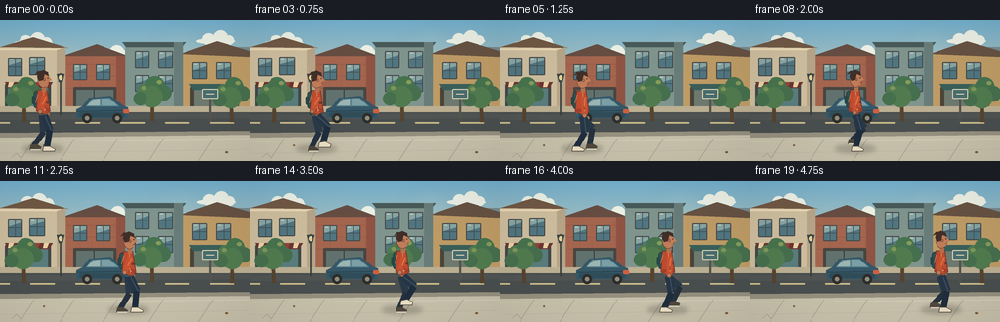
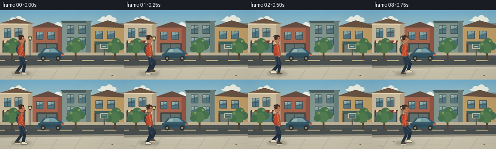

CODING AGENTS AS PIXEL WORLD MODELS
traex/GPT-5.6-Sol · motion_rationality_0031
点击播放 · 原生 RGB 像素
逐轮保存的候选
回放视频、检查图与代码变化。
每份候选均可单独播放。实际图片检查记录在下方工具轨迹中。
候选 01播放与检查图
点击播放 · 原生 RGB 像素


展开代码变化
--- 上一保存版本
+++ 本次保存版本
@@ -0,0 +1,318 @@
+from pathlib import Path
+import math
+import numpy as np
+from PIL import Image, ImageDraw, ImageFilter
+import artifact_io
+
+W, H, N, FPS = 256, 144, 20, 4.0
+S = 4 # supersampling for clean illustration
+RW, RH = W*S, H*S
+rng = np.random.default_rng(31)
+
+def sc(v): return int(round(v*S))
+def pts(seq): return [(sc(x), sc(y)) for x, y in seq]
+
+def ellipse(d, box, fill, outline=None, width=1):
+ d.ellipse(tuple(sc(v) for v in box), fill=fill, outline=outline, width=sc(width) if outline else 1)
+
+def polygon(d, xy, fill, outline=None):
+ d.polygon(pts(xy), fill=fill)
+ if outline:
+ d.line(pts(list(xy)+[xy[0]]), fill=outline, width=sc(0.7), joint='curve')
+
+def line(d, xy, fill, width, joint='curve'):
+ d.line(pts(xy), fill=fill, width=max(1,sc(width)), joint=joint)
+
+def rr(d, box, radius, fill, outline=None, width=1):
+ d.rounded_rectangle(tuple(sc(v) for v in box), radius=sc(radius), fill=fill,
+ outline=outline, width=sc(width))
+
+def make_background(t):
+ # Hand-painted dusk/daylight gradient, with very subtle film grain.
+ yy = np.linspace(0, 1, RH)[:, None, None]
+ top = np.array([116, 177, 207], dtype=float)
+ horizon = np.array([224, 210, 174], dtype=float)
+ base = top*(1-np.minimum(yy/0.68, 1)) + horizon*np.minimum(yy/0.68, 1)
+ arr = np.broadcast_to(base, (RH, RW, 3)).copy()
+ noise = rng.normal(0, 0.75, (RH, RW, 1))
+ arr = np.clip(arr + noise, 0, 255).astype(np.uint8)
+ im = Image.fromarray(arr, 'RGB')
+ d = ImageDraw.Draw(im)
+
+ # Soft sun glow.
+ glow = Image.new('RGBA', (RW, RH), (0,0,0,0))
+ gd = ImageDraw.Draw(glow)
+ for r, a in [(33,7),(25,10),(17,14),(9,28)]:
+ ellipse(gd, (184-r, 38-r, 184+r, 38+r), (255,236,184,a))
+ glow = glow.filter(ImageFilter.GaussianBlur(sc(7)))
+ im = Image.alpha_composite(im.convert('RGBA'), glow).convert('RGB')
+ d = ImageDraw.Draw(im)
+
+ # Slowly drifting layered clouds provide restrained secondary movement.
+ cloud_shift = t*0.65
+ for cx, cy, alpha_scale in [(34+cloud_shift,20,1),(115+cloud_shift*.6,33,.75),(221+cloud_shift*.35,18,.65)]:
+ col=(237,241,230)
+ ellipse(d,(cx-20,cy,cx+20,cy+6),col)
+ ellipse(d,(cx-14,cy-5,cx-1,cy+7),col)
+ ellipse(d,(cx-3,cy-8,cx+12,cy+7),col)
+ ellipse(d,(cx+8,cy-3,cx+19,cy+7),col)
+
+ # Distant skyline silhouettes.
+ polygon(d, [(0,61),(0,39),(15,39),(15,49),(30,49),(30,34),(43,34),(43,61)], (124,143,146))
+ polygon(d, [(199,61),(199,44),(208,44),(208,31),(223,31),(223,41),(240,41),(240,27),(256,27),(256,61)], (119,139,145))
+ for x in [6,20,34,205,215,229,246]:
+ rr(d,(x,46,x+3,49),.4,(205,205,176))
+
+ # Main row of neighborhood buildings.
+ # left cream cafe
+ polygon(d,[(0,27),(67,27),(67,89),(0,89)],(207,191,160))
+ polygon(d,[(0,27),(34,17),(70,28)],(113,89,69))
+ line(d,[(0,29),(67,29)],(235,217,180),2)
+ # brick building
+ polygon(d,[(67,36),(128,36),(128,89),(67,89)],(165,102,79))
+ polygon(d,[(64,36),(99,24),(131,36)],(103,78,67))
+ # narrow sage building
+ polygon(d,[(128,22),(187,22),(187,89),(128,89)],(128,149,142))
+ polygon(d,[(125,22),(190,22),(186,27),(129,27)],(73,91,90))
+ # ochre building on right
+ polygon(d,[(187,34),(256,34),(256,89),(187,89)],(192,157,103))
+ polygon(d,[(184,34),(222,21),(256,31),(256,37)],(104,83,67))
+
+ # Building side shade and masonry lines.
+ polygon(d,[(58,30),(67,27),(67,89),(58,89)],(184,166,137))
+ polygon(d,[(119,36),(128,36),(128,89),(119,89)],(143,84,68))
+ polygon(d,[(178,22),(187,22),(187,89),(178,89)],(105,126,123))
+ for y in [45,57,69]:
+ line(d,[(68,y),(127,y)],(151,87,69),.45)
+ for row,y in enumerate([42,51,60,69,78]):
+ off = 6 if row%2 else 0
+ for x in range(70+off,125,12): line(d,[(x,y),(x,y+7)],(151,87,69),.35)
+
+ # Windows, inset shadows, curtains and highlights.
+ windows=[(9,39,22,56),(31,38,45,55),(76,46,88,60),(99,46,112,60),
+ (139,32,152,48),(163,32,176,48),(139,57,152,72),(163,57,176,72),
+ (198,44,211,59),(222,44,236,59)]
+ for x1,y1,x2,y2 in windows:
+ rr(d,(x1-1,y1-1,x2+1,y2+1),1,(70,73,72))
+ rr(d,(x1,y1,x2,y2),.4,(82,119,130))
+ polygon(d,[(x1,y1),(x2,y1),(x2,y1+3),(x1,y1+7)],(137,166,165))
+ line(d,[((x1+x2)/2,y1),((x1+x2)/2,y2)],(67,81,82),.65)
+ line(d,[(x1,(y1+y2)/2),(x2,(y1+y2)/2)],(67,81,82),.65)
+ line(d,[(x1+1,y1+1),(x1+4,y1+1)],(220,224,201),.65)
+
+ # Ground floor shopfronts and awnings.
+ rr(d,(5,65,52,89),1,(66,74,70))
+ rr(d,(8,68,49,89),.3,(90,126,127))
+ polygon(d,[(5,63),(54,63),(50,69),(8,69)],(108,54,49))
+ for x in range(9,53,9):
+ polygon(d,[(x,63),(x+5,63),(x+3,68),(x-1,68)], (235,211,166) if (x//9)%2 else (146,68,58))
+ line(d,[(28,69),(28,89)],(56,66,64),1)
+ rr(d,(75,68,119,89),1,(74,70,65))
+ rr(d,(78,71,116,89),.2,(98,115,111))
+ line(d,[(96,71),(96,89)],(57,61,59),1)
+ rr(d,(195,68,245,89),1,(76,69,57))
+ rr(d,(199,71,241,89),.2,(111,123,113))
+ polygon(d,[(194,65),(247,65),(243,71),(198,71)],(58,96,91))
+
+ # Opposite pavement, asphalt roadway, near curb and broad sidewalk.
+ polygon(d,[(0,88),(256,88),(256,94),(0,94)],(190,177,148))
+ polygon(d,[(0,94),(256,94),(256,116),(0,116)],(74,79,79))
+ # asphalt soft bands and lane dashes
+ polygon(d,[(0,96),(256,95),(256,100),(0,102)],(81,85,83))
+ for x in range(-15,275,46): rr(d,(x,104,x+25,105.4),.6,(203,188,139))
+ polygon(d,[(0,115),(256,113),(256,119),(0,121)],(151,145,128))
+ polygon(d,[(0,120),(256,117),(256,144),(0,144)],(201,194,172))
+ line(d,[(0,124),(256,121)],(220,213,192),.8)
+ # sidewalk slab seams and perspective cracks
+ for x in [-4,35,76,120,167,218,274]: line(d,[(x,121),(x-15,144)],(174,169,152),.65)
+ line(d,[(0,136),(256,132)],(181,175,158),.55)
+
+ # Parked compact car behind the walker.
+ polygon(d,[(84,88),(91,79),(113,77),(126,87),(131,89),(131,100),(78,100),(78,91)],(54,88,104))
+ polygon(d,[(94,80),(112,79),(122,88),(88,88)],(90,130,142))
+ polygon(d,[(95,81),(102,80),(102,87),(89,87)],(157,182,178))
+ polygon(d,[(104,80),(112,80),(120,87),(104,87)],(124,160,165))
+ line(d,[(78,93),(131,92)],(39,65,76),1)
+ rr(d,(81,94,128,99),2,(48,77,89))
+ for cx in [89,120]:
+ ellipse(d,(cx-5,95,cx+5,105),(46,46,43))
+ ellipse(d,(cx-2.3,97.7,cx+2.3,102.3),(144,143,130))
+ rr(d,(126,91,132,95),1,(207,97,64))
+
+ # Street trees. Their clustered leaves move only a fraction in the breeze.
+ def tree(cx, base, scalev, phase):
+ sway=math.sin(t*1.35+phase)*0.7
+ polygon(d,[(cx-2,base),(cx+2,base),(cx+1+sway,base-31*scalev),(cx-2+sway,base-31*scalev)],(87,69,49))
+ line(d,[(cx,base-15),(cx-8+sway,base-25)],(86,70,49),1)
+ line(d,[(cx,base-19),(cx+9+sway,base-29)],(86,70,49),1)
+ clusters=[(-8,-31,8),(2,-36,10),(11,-29,8),(-1,-25,11),(-13,-23,7)]
+ for k,(ox,oy,r) in enumerate(clusters):
+ c=(71,112+4*(k%2),78) if k%3 else (82,124,80)
+ ellipse(d,(cx+ox-r+sway,base+oy-r,cx+ox+r+sway,base+oy+r),c)
+ # sunlit leaf flecks
+ ellipse(d,(cx-12+sway,base-36,cx-7+sway,base-32),(127,151,91))
+ ellipse(d,(cx+4+sway,base-42,cx+9+sway,base-38),(135,156,92))
+ tree(25,104,.8,.2)
+ tree(156,103,.88,2.3)
+ tree(238,104,.72,4.1)
+
+ # Traditional lamp and a small traffic sign.
+ line(d,[(62,97),(62,54)],(54,61,60),1.6)
+ line(d,[(58,55),(66,55)],(54,61,60),1)
+ polygon(d,[(58,55),(66,55),(64,63),(60,63)],(59,69,68))
+ ellipse(d,(60,56,64,61),(230,210,152))
+ rr(d,(214,72,216,103),.5,(85,86,78))
+ rr(d,(207,70,223,80),1,(73,110,111),(224,215,186),1)
+ line(d,[(211,75),(219,75)],(223,215,185),1)
+
+ # tiny street details and foreground leaves
+ ellipse(d,(44,127,46,129),(135,100,61))
+ ellipse(d,(230,134,233,136),(122,91,56))
+ line(d,[(12,140),(17,136),(21,141)],(164,156,137),.55)
+ return im
+
+def foot_state(p, stride=30.0):
+ """World-consistent foot trajectory: stance exactly cancels body translation."""
+ p %= 1.0
+ if p < .60:
+ # The stance foot moves backward relative to the hips by the same amount
+ # the body advances, so its contact point stays fixed on the pavement.
+ rel = stride*(.30-p)
+ lift = 0.0
+ swing = False
+ else:
+ q = (p-.60)/.40
+ ease = q*q*(3-2*q)
+ rel = stride*(-.30 + .60*ease)
+ lift = 8.0*math.sin(math.pi*q)**1.15
+ swing = True
+ return rel, lift, swing
+
+def ik_knee(hip, ankle, upper=17.0, lower=18.0):
+ hx,hy=hip; ax,ay=ankle
+ dx,dy=ax-hx, ay-hy
+ dist=max(1e-5,min(math.hypot(dx,dy),upper+lower-.1))
+ ux,uy=dx/dist,dy/dist
+ a=(upper*upper-lower*lower+dist*dist)/(2*dist)
+ h=math.sqrt(max(0,upper*upper-a*a))
+ mx,my=hx+a*ux,hy+a*uy
+ # Screen-space "minus perpendicular" bends both knees in walking direction.
+ return (mx+h*uy, my-h*ux)
+
+def draw_person(im, t):
+ d=ImageDraw.Draw(im)
+ period=.94
+ stride=30.0
+ phase=(t/period + .13) % 1.0
+ x=43.0 + (stride/period)*t
+ bob=-1.35*abs(math.sin(2*math.pi*phase))
+ ground=132.0
+ hip=(x,98.0+bob)
+ shoulder=(x+0.8,76.0+bob)
+ neck=(x+2.0,70.0+bob)
+
+ states=[]
+ for off in [.0,.5]:
+ p=(phase+off)%1
+ rel,lift,swing=foot_state(p,stride)
+ ankle=(x+rel, ground-2.0-lift)
+ knee=ik_knee(hip,ankle)
+ states.append(dict(p=p, rel=rel, lift=lift, swing=swing, ankle=ankle, knee=knee))
+
+ # Traveling soft contact shadow, slightly offset in the warm afternoon light.
+ shadow=Image.new('RGBA',(RW,RH),(0,0,0,0)); sd=ImageDraw.Draw(shadow)
+ ellipse(sd,(x-20,127,x+22,136),(49,49,43,60))
+ shadow=shadow.filter(ImageFilter.GaussianBlur(sc(2.2)))
+ im.alpha_composite(shadow) if im.mode=='RGBA' else im.paste(shadow,(0,0),shadow)
+ d=ImageDraw.Draw(im)
+
+ # Far leg (cooler and slightly slimmer), then its shoe.
+ far=states[1]
+ line(d,[hip,far['knee']],(43,58,72),7.2)
+ line(d,[far['knee'],far['ankle']],(37,50,63),5.7)
+ fax,fay=far['ankle']
+ shoe_tilt=-1.0 if far['swing'] else 0.0
+ polygon(d,[(fax-3,fay-1),(fax+3,fay-1+shoe_tilt),(fax+8,fay+2+shoe_tilt),(fax+7,fay+4),(fax-4,fay+4)],(80,72,62))
+ line(d,[(fax-3,fay+4),(fax+7,fay+4)],(223,215,192),1.2)
+
+ # Far arm, moving opposite its corresponding leg.
+ far_hand_x=shoulder[0]-far['rel']*.55
+ far_hand_y=shoulder[1]+19-2.2*math.cos(2*math.pi*far['p'])
+ far_elbow=((shoulder[0]+far_hand_x)/2-1,(shoulder[1]+far_hand_y)/2+2)
+ line(d,[(shoulder[0]-1,shoulder[1]+2),far_elbow,(far_hand_x,far_hand_y)],(139,63,44),5.2)
+ ellipse(d,(far_hand_x-2.1,far_hand_y-1.8,far_hand_x+2.2,far_hand_y+2.6),(170,105,74))
+
+ # Backpack behind torso, straps remain attached during the gait.
+ rr(d,(x-8.5,73+bob,x-1.5,91+bob),3,(45,83,83),(34,59,61),.7)
+ rr(d,(x-10.2,78+bob,x-7,87+bob),1.5,(40,71,73))
+
+ # Jacket torso: mild forward walking lean and cloth hem movement.
+ lean=1.0
+ torso=[(x-4.3,72+bob),(x+5.0,72+bob),(x+8.2,94+bob),
+ (x+2.5,97+bob),(x-5.8,94+bob),(x-5.0,79+bob)]
+ polygon(d,torso,(190,76,48),(103,55,45))
+ polygon(d,[(x-5.8,91+bob),(x+7.4,91+bob),(x+8.2,94+bob),(x-5.8,94+bob)],(166,63,44))
+ line(d,[(x+1.5,73+bob),(x+2.5,94+bob)],(231,144,87),.65)
+ rr(d,(x+3.5,84+bob,x+7,86+bob),.7,(111,55,43))
+ line(d,[(x-4,76+bob),(x-6.4,85+bob)],(229,123,75),.8)
+
+ # Near leg and shoe, warmer highlights establish depth/order.
+ near=states[0]
+ line(d,[(hip[0]+2,hip[1]),near['knee']],(39,55,72),8.0)
+ line(d,[near['knee'],near['ankle']],(31,46,62),6.2)
+ # Denim highlight along thigh.
+ line(d,[(hip[0]+3,hip[1]+1),(near['knee'][0]+1,near['knee'][1]-1)],(64,82,98),1.05)
+ nax,nay=near['ankle']
+ shoe_tilt=-1.2 if near['swing'] else 0.0
+ polygon(d,[(nax-3.5,nay-1),(nax+2.5,nay-1+shoe_tilt),(nax+8.5,nay+2+shoe_tilt),
+ (nax+7.5,nay+4),(nax-4.5,nay+4)],(235,225,200),(93,80,65))
+ line(d,[(nax-3,nay+4),(nax+8,nay+4)],(93,81,67),.75)
+
+ # Neck, head, ear and short wind-swept hair; face points right.
+ rr(d,(x-.2,67+bob,x+4.2,74+bob),1.5,(183,112,78))
+ ellipse(d,(x-4.6,53+bob,x+7.5,69.5+bob),(191,125,90),(105,65,52),.55)
+ # nose / face profile
+ polygon(d,[(x+6.5,58+bob),(x+10,62+bob),(x+6.7,63.3+bob),(x+6.2,67+bob),
+ (x+2,69+bob),(x+1,56+bob)],(193,126,89))
+ # hair cap and tufts
+ polygon(d,[(x-5,59+bob),(x-4,54+bob),(x+1,51.8+bob),(x+6,54+bob),
+ (x+6.8,58+bob),(x+2.5,56+bob),(x+1,62+bob),(x-3,63+bob)],(65,47,41))
+ polygon(d,[(x-3,55+bob),(x-8,57+bob),(x-4,52.8+bob),(x,53+bob)],(65,47,41))
+ ellipse(d,(x+1.2,60+bob,x+3.5,63+bob),(185,113,82),(111,69,56),.4)
+ ellipse(d,(x+5.5,59.5+bob,x+6.4,60.5+bob),(49,44,41))
+ line(d,[(x+7.1,65.1+bob),(x+5.1,65.3+bob)],(121,64,55),.55)
+
+ # Near arm on top, counter-swinging against near leg.
+ hand_x=shoulder[0]-near['rel']*.57
+ hand_y=shoulder[1]+19-2.0*math.cos(2*math.pi*near['p'])
+ elbow=((shoulder[0]+hand_x)/2+1.0,(shoulder[1]+hand_y)/2+2.5)
+ line(d,[(shoulder[0]+2,shoulder[1]+2),elbow,(hand_x,hand_y)],(201,83,51),6.0)
+ line(d,[(shoulder[0]+3,shoulder[1]+3),elbow],(229,122,72),1.1)
+ ellipse(d,(hand_x-2.2,hand_y-1.6,hand_x+2.3,hand_y+2.8),(194,124,87),(110,68,54),.4)
+
+ # Small rhythmic jacket fold and swinging zipper pull.
+ line(d,[(x+2.5,88+bob),(x+3.5,92+bob)],(104,54,44),.45)
+ ellipse(d,(x+3.0,92+bob,x+3.8,93+bob),(232,173,105))
+ return im
+
+def generate():
+ frames=[]
+ for i in range(N):
+ t=i/FPS
+ frame=make_background(t)
+ frame=draw_person(frame,t)
+ frame=frame.convert('RGB').resize((W,H),Image.Resampling.LANCZOS)
+ # restrained vignette for depth, fixed across frames
+ a=np.asarray(frame).astype(np.float32)
+ y,xg=np.ogrid[:H,:W]
+ dist=((xg-W/2)/(W*.72))**2+((y-H/2)/(H*.82))**2
+ vig=np.clip(1-.085*dist, .88, 1)[...,None]
+ a=np.clip(a*vig,0,255).astype(np.uint8)
+ frames.append(a)
+ return np.stack(frames)
+
+if __name__=='__main__':
+ frames=generate()
+ case_dir=Path(__file__).resolve().parent
+ artifact_io.save(frames,case_dir)
+ print('saved',frames.shape,frames.dtype,'mean',frames.mean().round(2))
可观测工具轨迹
实际执行的命令与返回图片。
命令 1exit 0
/bin/bash -lc "cat prompt.txt && printf '\\n---GENERATION_RULES---\\n' && cat GENERATION_RULES.md"
命令 2exit 0
/bin/bash -lc "cat task_spec.json && printf '\\n---FILES---\\n' && find . -maxdepth 2 -type f -printf '%p %s bytes\\n' | sort"
命令 3exit 0
/bin/bash -lc "sed -n '1,260p' artifact_io.py"
命令 4exit 0
/bin/bash -lc "cat > generate.py <<'PY'
from pathlib import Path
import math
import numpy as np
from PIL import Image, ImageDraw, ImageFilter
import artifact_io
W, H, N, FPS = 256, 144, 20, 4.0
S = 4 # supersampling for clean illustration
RW, RH = W*S, H*S
rng = np.random.default_rng(31)
def sc(v): return int(round(v*S))
def pts(seq): return [(sc(x), sc(y)) for x, y in seq]
def ellipse(d, box, fill, outline=None, width=1):
d.ellipse(tuple(sc(v) for v in box), fill=fill, outline=outline, width=sc(width) if outline else 1)
def polygon(d, xy, fill, outline=None):
d.polygon(pts(xy), fill=fill)
if outline:
d.line(pts(list(xy)+[xy[0]]), fill=outline, width=sc(0.7), joint='curve')
def line(d, xy, fill, width, joint='curve'):
d.line(pts(xy), fill=fill, width=max(1,sc(width)), joint=joint)
def rr(d, box, radius, fill, outline=None, width=1):
d.rounded_rectangle(tuple(sc(v) for v in box), radius=sc(radius), fill=fill,
outline=outline, width=sc(width))
def make_background(t):
# Hand-painted dusk/daylight gradient, with very subtle film grain.
yy = np.linspace(0, 1, RH)[:, None, None]
top = np.array([116, 177, 207], dtype=float)
horizon = np.array([224, 210, 174], dtype=float)
base = top*(1-np.minimum(yy/0.68, 1)) + horizon*np.minimum(yy/0.68, 1)
arr = np.broadcast_to(base, (RH, RW, 3)).copy()
noise = rng.normal(0, 0.75, (RH, RW, 1))
arr = np.clip(arr + noise, 0, 255).astype(np.uint8)
im = Image.fromarray(arr, 'RGB')
d = ImageDraw.Draw(im)
# Soft sun glow.
glow = Image.new('RGBA', (RW, RH), (0,0,0,0))
gd = ImageDraw.Draw(glow)
for r, a in [(33,7),(25,10),(17,14),(9,28)]:
ellipse(gd, (184-r, 38-r, 184+r, 38+r), (255,236,184,a))
glow = glow.filter(ImageFilter.GaussianBlur(sc(7)))
im = Image.alpha_composite(im.convert('RGBA'), glow).convert('RGB')
d = ImageDraw.Draw(im)
# Slowly drifting layered clouds provide restrained secondary movement.
cloud_shift = t*0.65
for cx, cy, alpha_scale in [(34+cloud_shift,20,1),(115+cloud_shift*.6,33,.75),(221+cloud_shift*.35,18,.65)]:
col=(237,241,230)
ellipse(d,(cx-20,cy,cx+20,cy+6),col)
ellipse(d,(cx-14,cy-5,cx-1,cy+7),col)
ellipse(d,(cx-3,cy-8,cx+12,cy+7),col)
ellipse(d,(cx+8,cy-3,cx+19,cy+7),col)
# Distant skyline silhouettes.
polygon(d, [(0,61),(0,39),(15,39),(15,49),(30,49),(30,34),(43,34),(43,61)], (124,143,146))
polygon(d, [(199,61),(199,44),(208,44),(208,31),(223,31),(223,41),(240,41),(240,27),(256,27),(256,61)], (119,139,145))
for x in [6,20,34,205,215,229,246]:
rr(d,(x,46,x+3,49),.4,(205,205,176))
# Main row of neighborhood buildings.
# left cream cafe
polygon(d,[(0,27),(67,27),(67,89),(0,89)],(207,191,160))
polygon(d,[(0,27),(34,17),(70,28)],(113,89,69))
line(d,[(0,29),(67,29)],(235,217,180),2)
# brick building
polygon(d,[(67,36),(128,36),(128,89),(67,89)],(165,102,79))
polygon(d,[(64,36),(99,24),(131,36)],(103,78,67))
# narrow sage building
polygon(d,[(128,22),(187,22),(187,89),(128,89)],(128,149,142))
polygon(d,[(125,22),(190,22),(186,27),(129,27)],(73,91,90))
# ochre building on right
polygon(d,[(187,34),(256,34),(256,89),(187,89)],(192,157,103))
polygon(d,[(184,34),(222,21),(256,31),(256,37)],(104,83,67))
# Building side shade and masonry lines.
polygon(d,[(58,30),(67,27),(67,89),(58,89)],(184,166,137))
polygon(d,[(119,36),(128,36),(128,89),(119,89)],(143,84,68))
polygon(d,[(178,22),(187,22),(187,89),(178,89)],(105,126,123))
for y in [45,57,69]:
line(d,[(68,y),(127,y)],(151,87,69),.45)
for row,y in enumerate([42,51,60,69,78]):
off = 6 if row%2 else 0
for x in range(70+off,125,12): line(d,[(x,y),(x,y+7)],(151,87,69),.35)
# Windows, inset shadows, curtains and highlights.
windows=[(9,39,22,56),(31,38,45,55),(76,46,88,60),(99,46,112,60),
(139,32,152,48),(163,32,176,48),(139,57,152,72),(163,57,176,72),
(198,44,211,59),(222,44,236,59)]
for x1,y1,x2,y2 in windows:
rr(d,(x1-1,y1-1,x2+1,y2+1),1,(70,73,72))
rr(d,(x1,y1,x2,y2),.4,(82,119,130))
polygon(d,[(x1,y1),(x2,y1),(x2,y1+3),(x1,y1+7)],(137,166,165))
line(d,[((x1+x2)/2,y1),((x1+x2)/2,y2)],(67,81,82),.65)
line(d,[(x1,(y1+y2)/2),(x2,(y1+y2)/2)],(67,81,82),.65)
line(d,[(x1+1,y1+1),(x1+4,y1+1)],(220,224,201),.65)
# Ground floor shopfronts and awnings.
rr(d,(5,65,52,89),1,(66,74,70))
rr(d,(8,68,49,89),.3,(90,126,127))
polygon(d,[(5,63),(54,63),(50,69),(8,69)],(108,54,49))
for x in range(9,53,9):
polygon(d,[(x,63),(x+5,63),(x+3,68),(x-1,68)], (235,211,166) if (x//9)%2 else (146,68,58))
line(d,[(28,69),(28,89)],(56,66,64),1)
rr(d,(75,68,119,89),1,(74,70,65))
rr(d,(78,71,116,89),.2,(98,115,111))
line(d,[(96,71),(96,89)],(57,61,59),1)
rr(d,(195,68,245,89),1,(76,69,57))
rr(d,(199,71,241,89),.2,(111,123,113))
polygon(d,[(194,65),(247,65),(243,71),(198,71)],(58,96,91))
# Opposite pavement, asphalt roadway, near curb and broad sidewalk.
polygon(d,[(0,88),(256,88),(256,94),(0,94)],(190,177,148))
polygon(d,[(0,94),(256,94),(256,116),(0,116)],(74,79,79))
# asphalt soft bands and lane dashes
polygon(d,[(0,96),(256,95),(256,100),(0,102)],(81,85,83))
for x in range(-15,275,46): rr(d,(x,104,x+25,105.4),.6,(203,188,139))
polygon(d,[(0,115),(256,113),(256,119),(0,121)],(151,145,128))
polygon(d,[(0,120),(256,117),(256,144),(0,144)],(201,194,172))
line(d,[(0,124),(256,121)],(220,213,192),.8)
# sidewalk slab seams and perspective cracks
for x in [-4,35,76,120,167,218,274]: line(d,[(x,121),(x-15,144)],(174,169,152),.65)
line(d,[(0,136),(256,132)],(181,175,158),.55)
# Parked compact car behind the walker.
polygon(d,[(84,88),(91,79),(113,77),(126,87),(131,89),(131,100),(78,100),(78,91)],(54,88,104))
polygon(d,[(94,80),(112,79),(122,88),(88,88)],(90,130,142))
polygon(d,[(95,81),(102,80),(102,87),(89,87)],(157,182,178))
polygon(d,[(104,80),(112,80),(120,87),(104,87)],(124,160,165))
line(d,[(78,93),(131,92)],(39,65,76),1)
rr(d,(81,94,128,99),2,(48,77,89))
for cx in [89,120]:
ellipse(d,(cx-5,95,cx+5,105),(46,46,43))
ellipse(d,(cx-2.3,97.7,cx+2.3,102.3),(144,143,130))
rr(d,(126,91,132,95),1,(207,97,64))
# Street trees. Their clustered leaves move only a fraction in the breeze.
def tree(cx, base, scalev, phase):
sway=math.sin(t*1.35+phase)*0.7
polygon(d,[(cx-2,base),(cx+2,base),(cx+1+sway,base-31*scalev),(cx-2+sway,base-31*scalev)],(87,69,49))
line(d,[(cx,base-15),(cx-8+sway,base-25)],(86,70,49),1)
line(d,[(cx,base-19),(cx+9+sway,base-29)],(86,70,49),1)
clusters=[(-8,-31,8),(2,-36,10),(11,-29,8),(-1,-25,11),(-13,-23,7)]
for k,(ox,oy,r) in enumerate(clusters):
c=(71,112+4*(k%2),78) if k%3 else (82,124,80)
ellipse(d,(cx+ox-r+sway,base+oy-r,cx+ox+r+sway,base+oy+r),c)
# sunlit leaf flecks
ellipse(d,(cx-12+sway,base-36,cx-7+sway,base-32),(127,151,91))
ellipse(d,(cx+4+sway,base-42,cx+9+sway,base-38),(135,156,92))
tree(25,104,.8,.2)
tree(156,103,.88,2.3)
tree(238,104,.72,4.1)
# Traditional lamp and a small traffic sign.
line(d,[(62,97),(62,54)],(54,61,60),1.6)
line(d,[(58,55),(66,55)],(54,61,60),1)
polygon(d,[(58,55),(66,55),(64,63),(60,63)],(59,69,68))
ellipse(d,(60,56,64,61),(230,210,152))
rr(d,(214,72,216,103),.5,(85,86,78))
rr(d,(207,70,223,80),1,(73,110,111),(224,215,186),1)
line(d,[(211,75),(219,75)],(223,215,185),1)
# tiny street details and foreground leaves
ellipse(d,(44,127,46,129),(135,100,61))
ellipse(d,(230,134,233,136),(122,91,56))
line(d,[(12,140),(17,136),(21,141)],(164,156,137),.55)
return im
def foot_state(p, stride=30.0):
\"\"\"World-consistent foot trajectory: stance exactly cancels body translation.\"\"\"
p %= 1.0
if p < .60:
# The stance foot moves backward relative to the hips by the same amount
# the body advances, so its contact point stays fixed on the pavement.
rel = stride*(.30-p)
lift = 0.0
swing = False
else:
q = (p-.60)/.40
ease = q*q*(3-2*q)
rel = stride*(-.30 + .60*ease)
lift = 8.0*math.sin(math.pi*q)**1.15
swing = True
return rel, lift, swing
def ik_knee(hip, ankle, upper=17.0, lower=18.0):
hx,hy=hip; ax,ay=ankle
dx,dy=ax-hx, ay-hy
dist=max(1e-5,min(math.hypot(dx,dy),upper+lower-.1))
ux,uy=dx/dist,dy/dist
a=(upper*upper-lower*lower+dist*dist)/(2*dist)
h=math.sqrt(max(0,upper*upper-a*a))
mx,my=hx+a*ux,hy+a*uy
# Screen-space \"minus perpendicular\" bends both knees in walking direction.
return (mx+h*uy, my-h*ux)
def draw_person(im, t):
d=ImageDraw.Draw(im)
period=.94
stride=30.0
phase=(t/period + .13) % 1.0
x=43.0 + (stride/period)*t
bob=-1.35*abs(math.sin(2*math.pi*phase))
ground=132.0
hip=(x,98.0+bob)
shoulder=(x+0.8,76.0+bob)
neck=(x+2.0,70.0+bob)
states=[]
for off in [.0,.5]:
p=(phase+off)%1
rel,lift,swing=foot_state(p,stride)
ankle=(x+rel, ground-2.0-lift)
knee=ik_knee(hip,ankle)
states.append(dict(p=p, rel=rel, lift=lift, swing=swing, ankle=ankle, knee=knee))
# Traveling soft contact shadow, slightly offset in the warm afternoon light.
shadow=Image.new('RGBA',(RW,RH),(0,0,0,0)); sd=ImageDraw.Draw(shadow)
ellipse(sd,(x-20,127,x+22,136),(49,49,43,60))
shadow=shadow.filter(ImageFilter.GaussianBlur(sc(2.2)))
im.alpha_composite(shadow) if im.mode=='RGBA' else im.paste(shadow,(0,0),shadow)
d=ImageDraw.Draw(im)
# Far leg (cooler and slightly slimmer), then its shoe.
far=states[1]
line(d,[hip,far['knee']],(43,58,72),7.2)
line(d,[far['knee'],far['ankle']],(37,50,63),5.7)
fax,fay=far['ankle']
shoe_tilt=-1.0 if far['swing'] else 0.0
polygon(d,[(fax-3,fay-1),(fax+3,fay-1+shoe_tilt),(fax+8,fay+2+shoe_tilt),(fax+7,fay+4),(fax-4,fay+4)],(80,72,62))
line(d,[(fax-3,fay+4),(fax+7,fay+4)],(223,215,192),1.2)
# Far arm, moving opposite its corresponding leg.
far_hand_x=shoulder[0]-far['rel']*.55
far_hand_y=shoulder[1]+19-2.2*math.cos(2*math.pi*far['p'])
far_elbow=((shoulder[0]+far_hand_x)/2-1,(shoulder[1]+far_hand_y)/2+2)
line(d,[(shoulder[0]-1,shoulder[1]+2),far_elbow,(far_hand_x,far_hand_y)],(139,63,44),5.2)
ellipse(d,(far_hand_x-2.1,far_hand_y-1.8,far_hand_x+2.2,far_hand_y+2.6),(170,105,74))
# Backpack behind torso, straps remain attached during the gait.
rr(d,(x-8.5,73+bob,x-1.5,91+bob),3,(45,83,83),(34,59,61),.7)
rr(d,(x-10.2,78+bob,x-7,87+bob),1.5,(40,71,73))
# Jacket torso: mild forward walking lean and cloth hem movement.
lean=1.0
torso=[(x-4.3,72+bob),(x+5.0,72+bob),(x+8.2,94+bob),
(x+2.5,97+bob),(x-5.8,94+bob),(x-5.0,79+bob)]
polygon(d,torso,(190,76,48),(103,55,45))
polygon(d,[(x-5.8,91+bob),(x+7.4,91+bob),(x+8.2,94+bob),(x-5.8,94+bob)],(166,63,44))
line(d,[(x+1.5,73+bob),(x+2.5,94+bob)],(231,144,87),.65)
rr(d,(x+3.5,84+bob,x+7,86+bob),.7,(111,55,43))
line(d,[(x-4,76+bob),(x-6.4,85+bob)],(229,123,75),.8)
# Near leg and shoe, warmer highlights establish depth/order.
near=states[0]
line(d,[(hip[0]+2,hip[1]),near['knee']],(39,55,72),8.0)
line(d,[near['knee'],near['ankle']],(31,46,62),6.2)
# Denim highlight along thigh.
line(d,[(hip[0]+3,hip[1]+1),(near['knee'][0]+1,near['knee'][1]-1)],(64,82,98),1.05)
nax,nay=near['ankle']
shoe_tilt=-1.2 if near['swing'] else 0.0
polygon(d,[(nax-3.5,nay-1),(nax+2.5,nay-1+shoe_tilt),(nax+8.5,nay+2+shoe_tilt),
(nax+7.5,nay+4),(nax-4.5,nay+4)],(235,225,200),(93,80,65))
line(d,[(nax-3,nay+4),(nax+8,nay+4)],(93,81,67),.75)
# Neck, head, ear and short wind-swept hair; face points right.
rr(d,(x-.2,67+bob,x+4.2,74+bob),1.5,(183,112,78))
ellipse(d,(x-4.6,53+bob,x+7.5,69.5+bob),(191,125,90),(105,65,52),.55)
# nose / face profile
polygon(d,[(x+6.5,58+bob),(x+10,62+bob),(x+6.7,63.3+bob),(x+6.2,67+bob),
(x+2,69+bob),(x+1,56+bob)],(193,126,89))
# hair cap and tufts
polygon(d,[(x-5,59+bob),(x-4,54+bob),(x+1,51.8+bob),(x+6,54+bob),
(x+6.8,58+bob),(x+2.5,56+bob),(x+1,62+bob),(x-3,63+bob)],(65,47,41))
polygon(d,[(x-3,55+bob),(x-8,57+bob),(x-4,52.8+bob),(x,53+bob)],(65,47,41))
ellipse(d,(x+1.2,60+bob,x+3.5,63+bob),(185,113,82),(111,69,56),.4)
ellipse(d,(x+5.5,59.5+bob,x+6.4,60.5+bob),(49,44,41))
line(d,[(x+7.1,65.1+bob),(x+5.1,65.3+bob)],(121,64,55),.55)
# Near arm on top, counter-swinging against near leg.
hand_x=shoulder[0]-near['rel']*.57
hand_y=shoulder[1]+19-2.0*math.cos(2*math.pi*near['p'])
elbow=((shoulder[0]+hand_x)/2+1.0,(shoulder[1]+hand_y)/2+2.5)
line(d,[(shoulder[0]+2,shoulder[1]+2),elbow,(hand_x,hand_y)],(201,83,51),6.0)
line(d,[(shoulder[0]+3,shoulder[1]+3),elbow],(229,122,72),1.1)
ellipse(d,(hand_x-2.2,hand_y-1.6,hand_x+2.3,hand_y+2.8),(194,124,87),(110,68,54),.4)
# Small rhythmic jacket fold and swinging zipper pull.
line(d,[(x+2.5,88+bob),(x+3.5,92+bob)],(104,54,44),.45)
ellipse(d,(x+3.0,92+bob,x+3.8,93+bob),(232,173,105))
return im
def generate():
frames=[]
for i in range(N):
t=i/FPS
frame=make_background(t)
frame=draw_person(frame,t)
frame=frame.convert('RGB').resize((W,H),Image.Resampling.LANCZOS)
# restrained vignette for depth, fixed across frames
a=np.asarray(frame).astype(np.float32)
y,xg=np.ogrid[:H,:W]
dist=((xg-W/2)/(W*.72))**2+((y-H/2)/(H*.82))**2
vig=np.clip(1-.085*dist, .88, 1)[...,None]
a=np.clip(a*vig,0,255).astype(np.uint8)
frames.append(a)
return np.stack(frames)
if __name__=='__main__':
frames=generate()
case_dir=Path(__file__).resolve().parent
artifact_io.save(frames,case_dir)
print('saved',frames.shape,frames.dtype,'mean',frames.mean().round(2))
PY
python generate.py
ls -lh pixels.npz inspection.png transition_check.png index.html frames/00.png frames/19.png"命令 5exit 0
/bin/bash -lc "python - <<'PY'
from PIL import Image
import numpy as np
ims=[np.array(Image.open(f'frames/{i:02d}.png')) for i in range(20)]
for i in range(1,20):
d=np.abs(ims[i].astype(int)-ims[i-1].astype(int))
print(f'{i-1:02}->{i:02}: changed={(d.max(2)>4).mean():.3f}, MAE={d.mean():.2f}')
print('all modes/sizes:', {(Image.open(f'frames/{i:02d}.png').mode,Image.open(f'frames/{i:02d}.png').size) for i in range(20)})
PY
command -v chafa || true
command -v viu || true"保存候选 1 份；完成命令 5 次；可验证图片返回 0 张。原始 API 响应与完整日志保留在本地。